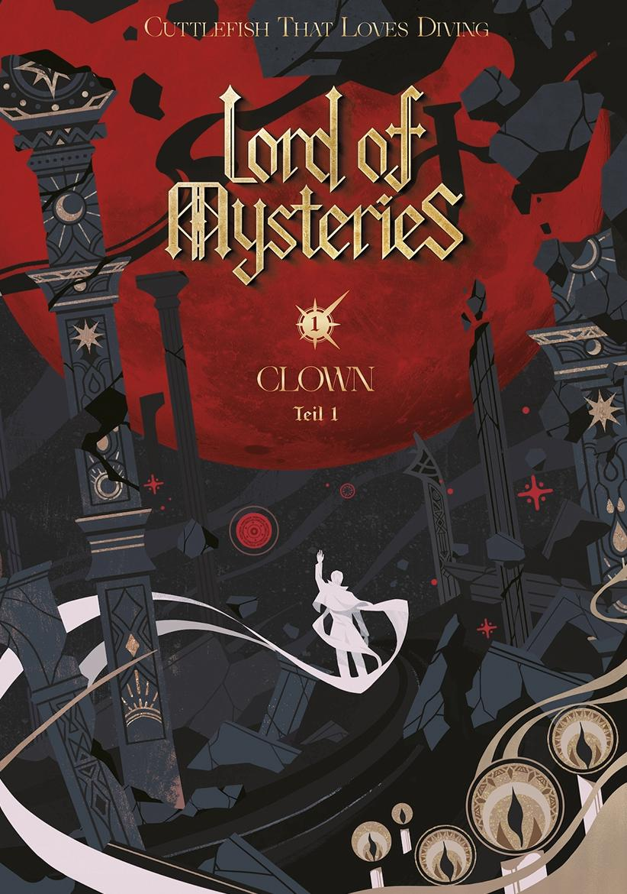

Повелитель тайн
Cuttlefish That Loves Diving
В эпоху пара и механизмов кто смог достичь необыкновенного? В туманах истории и тьмы кто шептал? Я проснулся из мира тайн и открыл глаза этому миру.
Огнестрельное оружие, пушки, линкоры, дирижабли и разностные машины. Зелья, гадания, проклятия, повешенный и запечатанные артефакты… Свет ярко сиял, но тайны мира никогда не были далеко. Это была легенда о «Шуте».
Жанр: Мистика
О произведении
Повелитель Тайн — фэнтезийное произведение, сочетающее элементы стимпанка, мистики и приключенческой литературы. Действие разворачивается в вымышленном мире, общественное устройство и технологии которого во многом напоминают Европу XIX века. В произведении особое внимание уделяется развитию сверхъестественных способностей, деятельности различных организаций и взаимодействию человека с потусторонними силами. Повествование объединяет детективные элементы, исследование мира и постепенное раскрытие его устройства.
Официальное китайсике издание на QiDian.
| Характеристика | Информация |
|---|---|
| Название | Повелитель тайн |
| Автор | Cuttlefish That Loves Diving |
| Оригинальное название | 诡秘之主 |
| Жанр | Фэнтези, мистика, приключения |
| Главный герой | Клейн Моретти |
| Место действия | Мир с технологиями эпохи пара, королевство Лоэн |
| Основная тема | Тайны, божества и сверхъестественные силы |
| Дата выхода | 1 Апреля 2018 - 1 Мая 2020 |
| Количество томов | 8 |